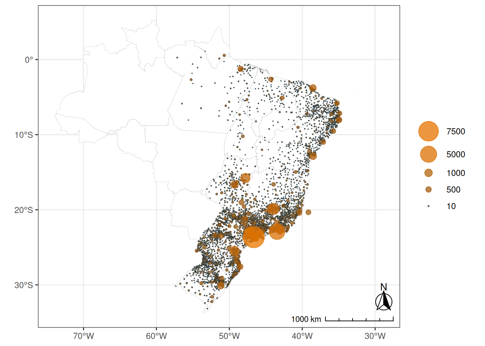
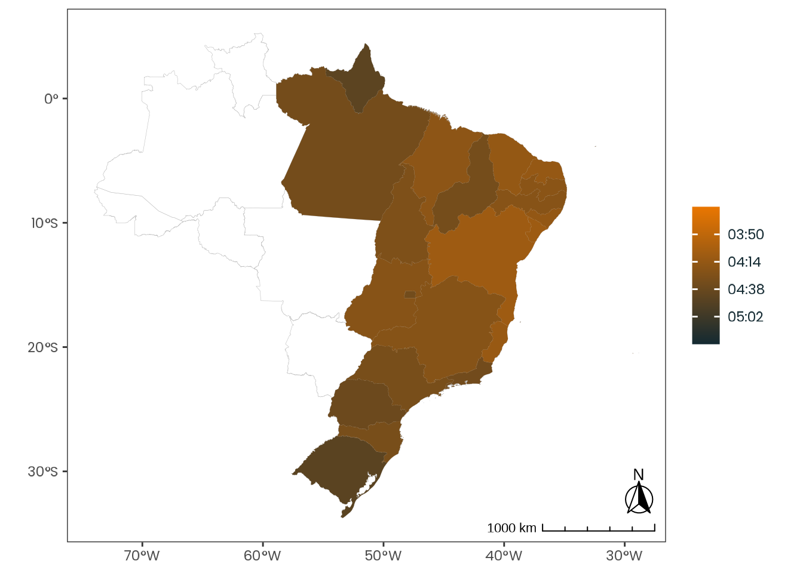
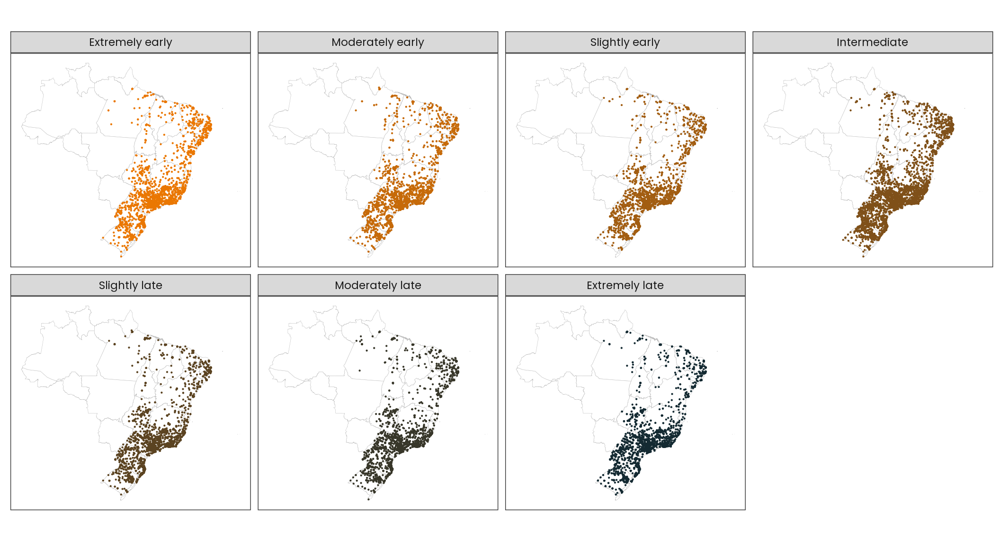

5 Is latitude associated with chronotype?
The following study was designed for publication in the journal Scientific Reports (IF 2023: 3.8/JCR | A1/2017–2020) and structured in accordance with the journal’s submission guidelines.
5.1 Abstract
*Chronotypes are temporal phenotypes that reflect our internal temporal organization, a product of evolutionary pressures enabling organisms to anticipate events. These intrinsic rhythms are modulated by zeitgebers — environmental stimuli that entrain these biological oscillations, with light exposure being the primary mechanism. Given light’s role in these systems, previous research hypothesized that latitude might significantly influence chronotypes, suggesting that populations near the equator would exhibit more morning-leaning characteristics due to more consistent light-dark cycles, while populations near the poles might display more evening-leaning tendencies with a potentially freer expression of intrinsic rhythms. To test this hypothesis, we analyzed chronotype data from a large sample of 65,823 subjects across diverse latitudes in Brazil. Our results revealed that latitude show only negligible effect sizes on chronotype, indicating that the entrainment phenomenon is far more complex than previously conceived. These findings challenge simplified environmental models of biological timing and underscore the need for more nuanced investigations into the mechanisms underlying temporal phenotypes, opening new avenues for understanding the intricate relationship between environmental cues and individual circadian rhythms.**
5.2 Main text
5.2.1 Introduction
Humans can differ from one another in many ways. These observable traits, like hair color or height, are called phenotypes and are also presented in the way that our body functions.
A chronotype is a temporal phenotype (Ehret, 1974; Pittendrigh, 1993). This word is usually used to refer to endogenous circadian rhythms, i.e., rhythms which periods that are close to a day or 24 hours (circa diem). The current body of knowledge of Chronobiology, the science that studies biological rhythms, indicates that the evolution of these internal oscillators is linked to our oscillatory environment, like the day and night cycle, which, along with our evolution, created environmental pressures for the development of a temporal organization (Aschoff, 1989; Paranjpe & Sharma, 2005). A way in which an organism could predict events and better manage its needs, like storing food for the winter.
A temporal system wouldn’t be of much use if it could not follow environmental changes. To those environmental signals that can regulate the biological rhythms are given the name zeitgeber (from the German Zeit, time, and Geber, giver). These zeitgebers produce inputs in our bodies that can shift and align those rhythms. This phenomenon is called entrainment (Roenneberg, Daan, et al., 2003; Roenneberg et al., 2010).
The main zeitgeber known today is the light, particularly the sun’s light (Khalsa et al., 2003; Minors et al., 1991; Roenneberg et al., 2007). Considering its influence in entraining the biological temporal system, several studies hypothesize that the latitudinal shift of the sun, related to the earth’s axis, would produce, on average, different temporal traits in populations that live close to the equator line when compared to populations that live close to the planet’s poles (Horzum et al., 2015; Hut et al., 2013; Leocadio-Miguel et al., 2014, 2017; Pittendrigh et al., 1991; Randler & Rahafar, 2017). That is because the latter ones would have greater oscillations in sun activity and an overall weak solar zeitgeber. This is the latitude hypothesis, that can also appear as the environmental hypothesis of circadian rhythm regulation.
Recently there have been attempts to test the latitude hypothesis in different settings, but, at least in humans, none of them have been successful in seeing a significant effect size related to the latitudinal cline. Some of these approaches worked with secondary data and with small samples. One of the most serious attempts of testing this hypothesis was made by Leocadio-Miguel et al. (2017). They measured the chronotype of \(12,884\) Brazillian subjects on a wide latitudinal spectrum using the Morningness–Eveningness Questionnaire (MEQ). Their results showed a negligible effect size. One possible reason for this is that the MEQ measures psychological traits and not biological states (Roenneberg, Pilz, et al., 2019), i.e., the circadian oscillation itself, therefore, it’s not the best way to answer the question (Leocadio-Miguel et al., 2014).
This article brings a novel attempt to test the latitude hypothesis, using, this time, a biological approach provided by the Munich ChronoType Questionnaire (MCTQ) (Roenneberg, Wirz-Justice, et al., 2003). Furthermore, the test was carried out on the biggest chronotype sample ever collected in a same country. A sample made of \(65\,824\) subjects, all living in the same timezone in Brazil, with only one week of difference between questionnaire responses Figure 5.1. The unfiltered valid sample comprises \(115\,166\) participants from all Brazilian states.
Code

Source: Created by the author.
5.2.2 Results
The local time of the sleep corrected midpoint between sleep onset and sleep end on work-free days (MSFsc), MCTQ proxy for measuring the chronotype, had an overall mean of \(\text{04:28:35}\). The distribution curve is shown in Figure 5.2.
That’s the midsleep point of Brazilian subjects with an intermediate/average chronotype. One can imagine, following the 7-9h sleep recommendation for healthy adults of the American Academy of Sleep Medicine (AASM) (Watson et al., 2015), that this average person would, if he/she had no social obligations, typically wake up at about \(\text{08:28:35}\).
Code

Source: Created by the author. Based on data visualization found in Roenneberg, Wirz-Justice, et al. (2019).
The MSFsc curve had a skewness of \(0.284\) and a kurtosis of \(2.773\). However, the distribution was not normal accordingly to Kolmogorov-Smirnov test (\(\text{D} = 0.03717\); \(\text{p-value} = 2e-16\)) and D’Agostino Skewness test (\(\text{Z3} = 31.525\); \(\text{p-value} = 2.2e-16\)) (see D’Agostino & Belanger, 1990; also Thode, 2002, p. 46, p. 101).
A linear regression model was created with MSFsc as the response variable and with age and sex as predictors (\(\text{R}^{2} = 0.05373\); \(\text{F}(2, 76741) = 2180\), \(\text{p-value} = 2e-16\)), the two most known predictors for chronotype (Roenneberg et al. (2007)). A Box-Cox transformation of the response variable was needed to attend to the linear regression model assumptions (\(\lambda = -1.1111\); \(\text{MSF}_{\text{sc}}^{\lambda - 1} / \lambda\)). All coefficients were significantly different than \(0\) (\(\text{p-value} = 2e-16\)) and, accordingly to D’Agostino Skewness test, the residuals were normal (\(\text{Z3} = -1.1906\); \(\text{p-value} = 0.23383\)). Residual homoscedasticity was verified by a Score Test for Heteroskedasticity (\(\chi^{2} = 0.00\); \(\text{p-value} = 1\)). No collinearity was found between the predictor variables (variance inflation factor: \(\text{age} = 1.0012\); \(\text{sex} = 1.0012\)).
Another model was created on top of the first one, adding the latitude as a predictor variable (\(\text{R}^{2} = 0.060698\); \(\text{F}(3, 76740) = 1650\), \(\text{p-value} = 2e-16\)). All coefficients were significantly different than 0 (\(\text{p-value} = 2e-16\)) and the residuals were normally distributed accordingly to the D’Agostino Skewness test, (\(\text{Z3} = 0.0742\); \(\text{p-value} = 0.94085\)). Residual homoscedasticity was verified by a Score Test for Heteroskedasticity (\(\chi^{2} = 0.00\); \(\text{p-value} = 1\)). No collinearity was found between the predictor variables (variance inflation factor: \(\text{age} = 1.0065\); \(\text{sex} = 1.0016\); \(\text{latitude} = 1.0056\)). The longitude was not used as a predictor because it presented colinearity with the latitude variable.
An \(\text{F}\) test for nested models showed a significant reduction of the residual sum of squares (\(\text{F}(1, 76740) = 568.94\), \(\text{p-value} = 2e-16\)), meaning that the latitude seems to produce an effect on the chronotype. However, when estimating Cohen’s \(f^2\) effect size, the result was negligible (Cohen, 1992) \(((0.06069 - 0.05373) / (1 - 0.06069) = 0.00740\)).
5.2.3 Discussion
It’s important to note that a causal and linear relationship between latitude and chronotype is an a priori assumption. The objective of this study is to test or falsify this hypothesis.
For the latitude hypothesis to be true, there must be a significant association between these two variables when the most common covariates are controlled. Predictive models, in this case, are an adequate method for testing this.
The results show that even with a wide latitudinal spectrum and with a big and aligned sample of biological states the latitude effect does not reveal itself in a non-negligible size. Several studies indicate the existence of this effect on the chronotype (Hut et al., 2013; Leocadio-Miguel et al., 2017; Pittendrigh et al., 1991; Randler, 2008; Randler & Rahafar, 2017; Roenneberg, Wirz-Justice, et al., 2003), but, at this time, at least in humans, no empirical evidence can support this claim. Our results are very similar to Leocadio-Miguel et al. (2017), which also found a negligible effect size (Cohen’s \(f^{2} = 0.004143174\)). The inconsistency of the latitude effect can be visualized in Figure 5.3.
Code

Source: Created by the author. Based on data visualization found in Leocadio-Miguel et al. (2017).
It’s also important to point out that this seemly weak relationship shown in Figure 5.3 is of very similar magnitude from the one Leocadio-Miguel et al. (2017) found (see Leocadio-Miguel et al. (2017), Figure 2), with the difference that it isn’t masked by a distorted y-axis — see the supplemental materials to view a resescaled version of the mentioned figure.
Despite the lack of evidence, is not uncommon to hear talks insisting that this effect is real and already confirmed. We suspect that this behavior may be derived from a lack of understanding of statistical models and techniques. Although it may be logical and aligned with the overall theory for the evolution of biological temporal systems, it’s our role as scientists to eliminate contractions, not pursue them.
Code
limits <- # Interquartile range (IQR): Q3 - Q1
c(
weighted_data |>
dplyr::pull(msf_sc) |>
transform_time() |>
quantile(0.25, na.rm = TRUE),
weighted_data |>
dplyr::pull(msf_sc) |>
transform_time() |>
quantile(0.75, na.rm = TRUE)
)
weighted_data |>
dplyr::mutate(msf_sc = transform_time(msf_sc)) |>
plot_brazil_state(
col_fill = "msf_sc",
transform = "identity",
viridis = "cividis",
direction = -1,
binned = FALSE,
labels = labels_hms,
limits = limits, # !!!
text_size = env_vars$base_size,
print = TRUE
)
#> ! There are duplicated values in state_code. msf_sc will be aggregated using the mean.
Source: Created by the author.
The absence of a strong entrainment with the solar zeitgeber shows that the entrainment phenomenon is more complex than we previously imagined. Other hypotheses for the human circadian entrainment, like the entrainment to self-selected light, proposed by Anna Skeldon and Derk-Jan Dijk (2021), need to be tested and may produce significant results. Methods and techiniques for complex systems, like causal loop diagrams and agent-based models (ABM), may help to unravel this phenomenon more properly.
Code

Source: Created by the author.
It’s important to notice that the results shown here are preliminary. The data still needs some cleaning and to be balanced with Brazil’s latest population census. The latitude coordinates used in the analysis are related to subjects’ residential state capital and, hence, have low resolution. Even with these results, it may be that a significant latitude effect can still appear at the end of the research.
Despite the several strengths that the dataset used in this study has, it is also important to notice its weaknesses and limitations. The fact that all the subjects were measured in the Spring season is one of them. Since the objective is to catch individuals in different seasonal patterns, the ideal moment to collect this kind of data is in the wintertime, when there is a greater insolation gradient between the equator and the poles. Another one is that this dataset can be influenced by the presence of a Daylight Saving Time (DST) event. This latter issue is explored in more detail in the methods section.
5.3 Methods
5.3.1 Measurement instrument
Chronotypes were measured using the core version of the standard Munich ChronoType Questionnaire (MCTQ) (Roenneberg, Wirz-Justice, et al., 2003). MCTQ is a widely validated and widely used self-report questionnaire for measuring the sleep-wake cycle and chronotypes (Roenneberg, Pilz, et al., 2019). It quantifies the chronotype as a state, a biological circadian phenotype, using as a proxy the local time of the sleep corrected midpoint between sleep onset and sleep end on work-free days (MSFsc). A sleep correction (SC) is made when a possible sleep compensation related to a lack of sleep on workdays is identified (Roenneberg, 2012).
Subjects were asked to complete an online questionnaire based on the MCTQ Portuguese translation created by Till Roenneberg & Martha Merrow for the EUCLOCK project (Roenneberg & Merrow, 2006) (\(\text{statements mean cosine distance} = 0.921\)). They were also asked to provide sociodemographic (e.g., age, sex), geographic (e.g., full residential address), anthropometric (e.g., weight, height), and work/study routine-related data. A deactivated version of the questionnaire can be seen at https://bit.ly/brchrono-form.
5.3.2 Sample
The sample is made up of \(76,744\) Brazilian subjects. It was obtained in 2017 from October 15th to 21st by a broadcast of the online questionnaire on a popular Sunday TV show with national reach (Rede Globo, 2017). This amount of data collected in such a short time gave the sample a population cross-sectional characteristic.
A survey conducted in 2019 by the Brazilian Institute of Geography and Statistics (IBGE) (2021) found that \(82.17\%\) of Brazilian households had access to an internet connection. Therefore, this sample is likely to have a good representation of Brazil’s population. Only residents of Brazilian states in the UTC-3 timezone, aged \(18\) years or older, were included in the final sample.
In order to verify if the sample size was adequate for the study of the phenomenon under investigation, a power analysis was conducted for nested multiple regression models using the G*Power software (Faul et al., 2007). The analysis used the parameters presented in Leocadio-Miguel et al. (2017) article for a multiple linear regression with 10 tested predictors and only \(10\) conceived predictors, considering a significance level of \(0.05\) (\(\alpha\)) and a power of \(0.95\) (\(1 - \beta\)). The result showed that a sample of \(5,895\) individuals would be necessary to test the hypothesis.
Daylight Saving Time (DST) began in Brazil at midnight on October 15th, 2017. Residents from the Midwest, Southeast, and South regions were instructed to set the clock forward by 1 hour. We believe that this event did not contaminate the data since it started on the same day of the data collection. It’s important to notice that MCTQ asks subjects to relate their routine behavior, not how they behaved in the last few days. A possible effect of the DST on the sample is the production of an even later chronotype for populations near the planet’s poles, amplifying a possible latitude effect. However, this was not shown on the hypothesis test.
Based on the 2022 census (Instituto Brasileiro de Geografia e Estatística, n.d.-a), Brazil had \(52.263\%\) of females and \(47.737\%\) of males with an age equal to or greater than 18 years old. The sample is skewed for female subjects, with \(66.297\%\) of females and \(33.703\%\) of male subjects.
The subjects’ mean age is \(32.015\) years (\(\text{SD} = 9.252\); \(\text{Max.} = 58.786\)). Female subjects have a mean age of \(31.787\) years (\(\text{SD} = 9.364\); \(\text{Max.} = 58.786\)) and male subjects \(32.464\) years (\(\text{SD} = 9.012\); \(\text{Max.} = 58.772\)). For comparison, based on the 2022 census (Instituto Brasileiro de Geografia e Estatística, n.d.-b), Brazil’s population with an age equal to or greater than \(18\) years old had a mean age of \(44.277\) years (\(\text{SD} = 17.221\)), with a mean age of \(44.987\) years (\(\text{SD} = 17.511\)) for female subjects and a mean age of \(43.499\) years (\(\text{SD} = 16.864\)) for male subjects.
Considering the five regions of Brazil, the sample is mostly skewed for the Southeast, the most populated region. According to Brazil’s 2022 census (Instituto Brasileiro de Geografia e Estatística, 2022), the Southeast region is home to \(41.784\%\) of Brazil’s population, followed by the Northeast (\(26.910\%\)), South (\(14.741\%\)), North (\(8.544\%\)), and Midwest (\(8.021\%\)) regions. \(62.454\%\) of the sample is located in the Southeast region, \(11.797\%\) in the Northeast, \(17.861\%\) in the South, \(1.682\%\) in the North, and \(6.205\%\) in the Midwest region. Note that a lack of subjects in the North and Midwest region is justified by the sample timezone inclusion criteria (UTC-3).
The sample latitudinal range was \(30.211\) decimal degrees (\(\text{Min.} = -30.109\); \(\text{Max.} = 0.10177\)) with a longitudinal span of \(16.378\) decimal degrees (\(\text{Min.} = -51.342\); \(\text{Max.} = -34.964\)). For comparison, Brazil has a latitudinal range of \(39.024\) decimal degrees (\(\text{Min.} = -33.752\); \(\text{Max.} = 5.2719\)) and a longitudinal span of \(39.198\) decimal degrees (\(\text{Min.} = -34.793\); \(\text{Max.} = -73.991\)).
The results shown in this article are just a preliminary view of the data analysis. The latitudes and longitudes of each subject are represented by the coordinates of his/her state’s capital (a low resolution). The final results will have the latitude and longitude coordinates based on subjects’ postal codes and will also use a balanced dataset following the latest Brazil census.
5.3.3 Data wrangling
The data wrangling and analysis followed the data science program proposed by Hadley Wickham and Garrett Grolemund (Wickham, 2016). All processes were made with the help of the R programming language (R Core Team, n.d.), RStudio IDE (Posit Team, n.d.), and several R packages. The tidyverse and rOpenSci package ecosystem and other R packages adherents of the tidy tools manifesto (Wickham & Bryan, 2023) were prioritized. The MCTQ data was analyzed using the mctq rOpenSci peer-reviewed package (Vartanian, 2023). All processes were made in order to provide result reproducibility and to be in accordance with the FAIR principles (Wilkinson et al., 2016).
5.3.4 Hypothesis testing
The study hypothesis was tested using nested models of multiple linear regressions. The main idea of nested models is to verify the effect of the inclusion of one or more predictors in the model variance explanation (i.e., the \(\text{R}^{2}\)) (Allen, 1997). This can be made by creating a restricted model and then comparing it with a full model. Hence, the hypothesis can be schematized as follows.
\[ \begin{cases} \text{H}_{0}: \Delta \ \text{Adjusted} \ \text{R}^{2} \leq \text{MES} \quad \text{or} \quad \text{F-test is not significant} \\ \text{H}_{a}: \Delta \ \text{Adjusted} \ \text{R}^{2} > \text{MES} \quad \text{and} \quad \text{F-test is significant} \end{cases} \]
In order to test a possible latitude association in predicting the chronotype, the full model was the restricted model with the addition of the latitude variable. The restricted model had the local time of the sleep corrected midpoint between sleep onset and sleep end on work-free days (MSFsc) as the response variable, MCTQ proxy for the chronotype, with sex and age as predictors.
A residual analysis was made to ensure the validity of the models before the hypothesis test. The hypothesis was tested using a \(0.05\) (\(\alpha\)) significance level.
To favor the alternative hypothesis (\(\text{H}_{a}\)), not only the \(\text{R}^{2}\) of the full model must be significantly larger than the \(\text{R}^{2}\) of the restricted model, but the effect size must be at least considered small. To evaluate the effect size, Cohen’s \(f^{2}\) and his categorical parameters for size were used (Cohen, 1992). That means that, in order to favor (\(\text{H}_{a}\)), the effect size must be at least equal to or greater than \(0.0219\).
5.3.5 Data availability
The data that support the findings of this study are available from the corresponding author [DV]. Restrictions apply to the availability of these data, which were used under the approval of a Research Ethics Committee (REC) linked to the Brazilian National Research Ethics Committee (CONEP), hence it cannot be publicly shared. Data are, however, available from the author upon reasonable request and with CONEP approval.
5.3.6 Code availability
The research compendium of the project is available under the MIT license at https://github.com/danielvartan/mastersthesis. The code has all the steps from the raw data to the test results.
5.4 Acknowledgments
Financial support was provided by the Coordination for the Improvement of Higher Education Personnel (CAPES) (Grant number: 88887.703720/2022-00).
5.5 Ethics declarations
5.5.1 Competing interests
The author declares that the study was carried out without any commercial or financial connections that could be seen as a possible competing interest.
5.6 Additional information
This manuscript shows only preliminary results and should not be considered as a document ready for journal submission.
See the appendices section for supplementary information.
Correspondence can be sent to Daniel Vartanian (danvartan@gmail.com).
5.7 Rights and permissions
This article is released under the Creative Commons Attribution 4.0 International License, which permits use, sharing, adaptation, distribution, and reproduction in any medium or format, as long as be given appropriate credit to the original author and the source, provide a link to the Creative Commons license, and indicate if changes were made.